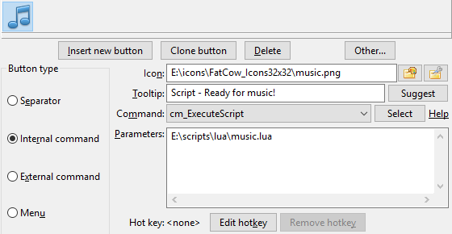
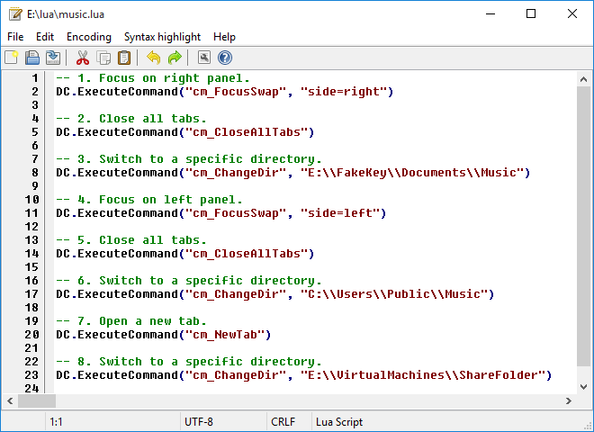
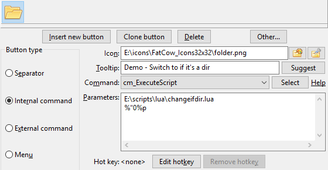
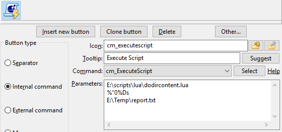
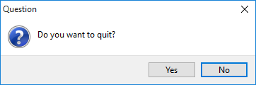
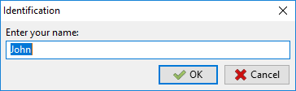

关于 Lua 脚本编程语言的详细信息可以在Lua 网站上找到。
Double Commander可以通过 cm_ExecuteScript 命令执行 Lua 脚本。
脚本参数必须原样传递，不得转义（不带引号或“\”），为此我们需要使用 %"0 变量：例如，%"0%p0 用于光标下的文件，而不是 %p0 或 %"0%D 用于当前目录，而不是 %D。否则，如果Double Commander自动添加引号，它们将作为参数的一部分传递，您将不得不考虑它们。
要获取所有选定文件的列表，我们可以使用 变量 (%LU, %FU 或 %RU) 或内部命令 (cm_SaveSelectionToFile, cm_SaveFileDetailsToFile, cm_CopyFullNamesToClip 或 cm_CopyFileDetailsToClip)。
我们可以使用，例如，%p：在这种情况下，Double Commander 将在一行中传递所有选定文件的名称，用空格分隔名称。
也可以使用 Lua 脚本编写内容插件，示例可以在程序文件夹中找到（ plugins/wdx/scripts ）。 Wiki 有一个页面专门用于编写插件。 限制：仅支持以下数据类型
上面的列表包含了头文件中的名称，在 Lua 脚本中我们必须使用括号中指定的数值。
注意：对于文件属性对话框，调用ContentGetValue函数时使用CONTENT_DELAYIFSLOW标志（第四个参数，值为 1），这可以避免打开窗口时的延迟：如果数据检索较慢，我们可以通过简单地添加标志值检查并对这样的字段或插件返回nil来排除这些数据。
注意：如果插件需要返回一个空字符串，传递 nil 会比传递 "" 更快。
注意：Lua 函数 io.open 使用标准 C 函数 fopen：在文本模式下，该函数在读取和写入时可以转换行结束符的类型（CRLF、LF 或 CR），这可能导致意外结果。如果您遇到具有不同类型行结束符的文件，或者如果您正在编写跨平台脚本，则必须考虑这一点，或者更实际的做法是优先选择二进制模式。
关于文本编码
所有下面描述的附加功能都接受 UTF-8 编码的字符串参数，并以这种编码返回字符串（LazUtf8.ConvertEncoding函数除外）。
一些标准 Lua 库中的函数已被 Double Commander 或 Free Pascal/Lazarus 中的函数替换（或编写了新的函数），这提供了 UTF-8 支持。
在编写插件时，我们也应该对文本数据使用 UTF-8（ft_multiplechoice、ft_string 和 ft_fulltext）。
保存脚本时，请使用不带 BOM 的 UTF-8 编码。
为了解释 Lua 脚本文件，我们需要一个 Lua DLL 文件，Double Commander 支持 5.1 到 5.4 版本。
默认情况下，DC 在其目录和系统目录中查找名为 lua5.1.dll （Windows）、 liblua5.1.so.0 （Unix 或 GNU/Linux）或 liblua5.1.dylib （macOS）的文件。我们可以在 Lua 库文件中更改 文件名（和路径）以使用参数。
我们可以使用来自 LuaJIT 项目 的 DLL 文件。 LuaJIT 结合了用汇编语言编写的高速解释器和最先进的 JIT 编译器。此外，我们还获得了 FFI 库，它允许从纯 Lua 代码调用外部 C 函数并使用 C 数据结构。
DC 的 Windows 发行版默认包含 Lua DLL（在 DC 0.9.7 及更新版本中来自 LuaJIT 项目），在其他情况下，我们可以通过包管理器找到并安装它，或者自行编译。如果我们使用的是 64 位版本的 DC，DLL 也必须是 64 位版本。
Double Commander为我们的 Lua 脚本提供了一些功能库。
这是它们的列表。
| 库列表 | ||
|---|---|---|
| 库名称 | 脚本名称 | 快速描述 |
| DC | Double Commander特定功能 | |
| SysUtils | 各种系统功能 | |
| Clipbrd | 提供外部剪贴板功能 | |
| Dialogs | 与用户互动 | |
| LazUtf8 | UTF-8 字符功能 | |
| Char | 获取字符信息 | |
| os | 与操作系统相关的功能 | |
该库包含Double Commander特定功能。
它在表格 DC 内提供所有功能。
| DC 库 | |
|---|---|
| 函数名称 | 描述 |
DC.LogWrite |
DC.LogWrite(sMessage, iMsgType, bForce, bLogFile) 写一条消息到日志窗口。 以下是每个字段的描述：
|
DC.CurrentPanel |
iPanel = DC.CurrentPanel() 获取活动面板：如果左侧面板处于活动状态则返回 0，如果右侧面板处于活动状态则返回 1。 DC.CurrentPanel(iPanel) 设置活动面板：如果 iPanel 等于 0，则为左面板；如果等于 1，则为右面板。 |
DC.ExecuteCommand |
DC.ExecuteCommand(sCommand, Param1, Param2,...,ParamX) 这允许脚本调用 DC 的内部命令。 sCommand 正在保存实际的内部命令名称。 我们可以提供尽可能多的 Param...，只要命令支持。 |
注意: 脚本在Double Commander的主线程中运行，因此有时顺序执行导航命令可能无法正常工作（例如，大目录、慢磁盘），在这种情况下，请尝试在设置中禁用在单独线程中加载文件列表。
在这个例子中，我们编写了一个简单的脚本，它将执行以下操作：
-- 1. 聚焦右侧面板。 DC.ExecuteCommand("cm_FocusSwap", "side=right") -- 2. 关闭所有标签。 DC.ExecuteCommand("cm_CloseAllTabs") -- 3. 切换到特定目录。 DC.ExecuteCommand("cm_ChangeDir", "E:\\FakeKey\\Documents\\Music") -- 4. 聚焦左侧面板。 DC.ExecuteCommand("cm_FocusSwap", "side=left") -- 5. 关闭所有标签。 DC.ExecuteCommand("cm_CloseAllTabs") -- 6. 切换到特定目录。 DC.ExecuteCommand("cm_ChangeDir", "C:\\Users\\Public\\Music") -- 7. 打开一个新标签。 DC.ExecuteCommand("cm_NewTab") -- 8. 切换到特定目录。 DC.ExecuteCommand("cm_ChangeDir", "E:\\VirtualMachines\\ShareFolder")
使用内部命令 cm_ExecuteScript，我们可以配置一个工具栏按钮来执行我们的脚本。
假设这个脚本文件是 E:\scripts\lua\music.lua，我们可以这样配置按钮：

此外，我们可能会使用内部的Double Commander编辑器来编辑我们的脚本。
如果文件名具有 .lua 文件扩展名，它将被内部编辑器识别，并为我们提供特定于此 Lua 语言的语法高亮。

该库包含各种系统功能。
它在表 SysUtils 内提供所有功能。
| 系统库 | |||||||||||
|---|---|---|---|---|---|---|---|---|---|---|---|
| 函数名称 | 描述 | ||||||||||
SysUtils.Sleep |
SysUtils.Sleep(iMilliseconds) 暂停脚本的执行，直到指定的iMilliseconds毫秒。在指定期限到期后，脚本执行将恢复。 |
||||||||||
SysUtils.GetTickCount |
SysUtils.GetTickCount() 返回一个递增的时钟滴答计数。它对于时间测量很有用，但不应对滴答之间的间隔做出任何假设。 |
||||||||||
SysUtils.FileExists |
bExists = SysUtils.FileExists(sFileName) 检查特定文件是否存在于文件系统中。 在bExists中返回值 |
||||||||||
SysUtils.DirectoryExists |
bExists = SysUtils.DirectoryExists(sDirectory) 检查 sDirectory 是否存在于文件系统中，并且确实是一个目录。 如果是这种情况，函数在 bExists 中返回值 |
||||||||||
SysUtils.FileGetAttr |
iAttr = SysUtils.FileGetAttr(sFileName) 在iAttr中返回文件sFileName的属性设置。 查看返回值的详细说明 在这里。 |
||||||||||
SysUtils.FindFirst |
Handle,FindData = SysUtils.FindFirst(sPath) 查找与sPath匹配的文件，通常使用通配符。 如果未找到文件，Handle 将是 当找到至少一个项目时，返回的 Handle 可用于后续的 FindData 表包含有关找到的文件或目录的信息。 FindData 表的字段是：
|
||||||||||
SysUtils.FindNext |
Result，FindData = SysUtils.FindNext(Handle) 通过重新使用之前返回的 Handle，找到由 返回的 结果 如果找到文件或目录将为非空，否则将为 对于 备注： 最后一次 |
||||||||||
SysUtils.FindClose |
SysUtils.FindClose(Handle) 结束一系列 释放这些调用所使用的任何内存。 这通电话是绝对必要的，否则可能会发生记忆丧失。 |
||||||||||
SysUtils.CreateDirectory |
bResult = SysUtils.CreateDirectory(sDirectory) 创建一个目录链，sDirectory 是目录的完整路径。 返回 |
||||||||||
SysUtils.CreateHardLink |
bResult = SysUtils.CreateHardLink(sFileName, sLinkName) 创建硬链接 sLinkName 到文件 sFileName。 返回 |
||||||||||
SysUtils.CreateSymbolicLink |
bResult = SysUtils.CreateSymbolicLink(sFileName, sLinkName) 创建符号链接 sLinkName 到文件或目录 sFileName。 返回 |
||||||||||
SysUtils.ReadSymbolicLink |
sTarget = SysUtils.ReadSymbolicLink(sLinkName, bRecursive) 读取符号链接的目标 sLinkName。 如果 bRecursive 为 返回符号链接 sLinkName 指向的路径，或者在链接无效或指向的文件不存在且 bRecursive 为 |
||||||||||
SysUtils.ExtractFileName |
sName = SysUtils.ExtractFileName(sFileName) 从完整路径文件名中提取文件名部分。 文件名由最后一个目录分隔符（"/"或"\"）或驱动器字母之后的所有字符组成。 |
||||||||||
SysUtils.ExtractFileExt |
sExt = SysUtils.ExtractFileExt(sFileName) 从文件名中提取扩展名（最后一个“.”（点）之后的所有字符，包括“.”字符）。 |
||||||||||
SysUtils.ExtractFilePath |
sPath = SysUtils.ExtractFilePath(sFileName) 从文件名中提取路径（包括驱动器字母）。 路径由最后一个目录分隔符（“/”或“\”）之前的所有字符组成，包括目录分隔符本身。 |
||||||||||
SysUtils.ExtractFileDir |
sDir = SysUtils.ExtractFileDir(sFileName) 提取sFileName的目录部分，包括驱动器字母。 目录名称没有结束目录分隔符，这与 |
||||||||||
SysUtils.ExtractFileDrive |
sDrive = SysUtils.ExtractFileDrive(sFileName) 从文件名中提取驱动器部分。 请注意，某些操作系统不支持驱动器字母。 |
||||||||||
SysUtils.GetAbsolutePath |
sName = SysUtils.GetAbsolutePath(sFileName, sBaseDirectory) 返回文件的绝对（完整）路径：
|
||||||||||
SysUtils.GetRelativePath |
sName = SysUtils.GetRelativePath(sFileName, sBaseDirectory) 返回相对于指定目录的文件名：
如果 sFileName 和 sBaseDirectory 包含相同的值，函数将返回一个空字符串 ("")。 |
||||||||||
SysUtils.MatchesMask |
bResult = SysUtils.MatchesMask(sFileName, sMask, iMaskOptions) 返回 iMaskOptions（可选参数，默认值为 0）设置为以下值的总和：
|
||||||||||
SysUtils.MatchesMaskList |
bResult = SysUtils.MatchesMaskList(sFileName, sMaskList, sSeparator, iMaskOptions) 返回 sSeparator 和 iMaskOptions（见上文）是可选参数。 |
||||||||||
SysUtils.GetTempName |
sTempFileName = SysUtils.GetTempName() 将返回一个文件名，用作临时文件名（在临时文件的系统目录中），类似于 os.tmpname 函数，但该文件将在一个子目录中创建，该子目录在关闭 Double Commander 时会自动删除。如果函数无法创建唯一名称，它将返回一个空字符串。 |
||||||||||
SysUtils.PathDelim |
SysUtils.PathDelim 当前操作系统用于在完整文件名中分隔目录名称的字符。 在 Unix/Linux 系统中，目录分隔符是"/"，而在 Windows 中则是"\\"。 |
||||||||||
FileGetAttr 返回文件 sFileName 的属性设置。
该属性是以下常量的OR组合：
| SysUtils.FileGetAttr 返回值中使用的常量 | |
|---|---|
| 值 | 含意 |
0x00000001 faReadOnly |
该文件是只读的。 |
0x00000002 faHidden |
文件是隐藏的。 在 Unix/Linux 中，这意味着文件名以点开头。 |
0x00000004 faSysFile |
该文件是系统文件。 在 Unix/Linux 中，这意味着该文件是一个字符设备或块设备，一个命名管道（FIFO）。 |
0x00000008 faVolumeId |
卷标。 仅适用于在普通 FAT（非 VFAT 或 FAT32）文件系统上的 DOS/Windows。 |
0x00000010 faDirectory |
文件是一个目录。 |
0x00000020 faArchive |
文件已归档。在 Unix/Linux 中不可能。 |
0x00000400 faSymLink |
文件是一个符号链接。 |
注意：如果发生错误，将返回-1。 | |
在下一节中查看示例。
以下脚本是使用 SysUtils.FileGetAttr 的示例。
当参数被检测为目录时，它将在活动面板中打开一个新标签并切换到该标签。
local params = {...} local iAttr if #params == 1 then -- We got at least one parameter? iAttr = SysUtils.FileGetAttr(params[1]) if iAttr > 0 then -- We got a valid attribute? if math.floor(iAttr / 0x00000010) % 2 ~= 0 then -- bit 4 is set? So it's a directory. DC.ExecuteCommand("cm_NewTab") DC.ExecuteCommand("cm_ChangeDir", params[1]) end end end
在上述示例中，params[1] 是传递给脚本的第一个参数。
在使用内部命令 cm_ExecuteScript 时，它将是脚本文件名之后传递的第一个参数。
在我们的示例中，我们可以编程一个样本工具栏按钮，如下所示：

在这个例子中，参数 %"0%p 将被传递给脚本。这将表示在我们按下工具栏按钮时，当前在活动面板中选定的项目的文件名（未加引号）。
在以下脚本示例中，我们将扫描作为参数接收的目录内容，并将结果数据存储到作为第二个参数传递的文本文件中。
这将使我们对 FindFirst、FindNext 和 FindClose 的使用有一个很好的了解。
local params = {...} if #params == 2 then -- We got our 2 parameters? local Result = nil local hOutputFile = nil hOutputFile = io.output(params[2]) local Handle, FindData = SysUtils.FindFirst(params[1] .. "\\*") if Handle ~= nil then repeat io.write(FindData.Name .. "\r") io.write(FindData.Size .. "\r") io.write("---------------\r") Result,FindData = SysUtils.FindNext(Handle) until Result == nil SysUtils.FindClose(Handle) io.close(hOutputFile) end end
在上述示例中，我们需要向我们的脚本传递两个参数：
所以使用内部命令 cm_ExecuteScript 配置工具栏按钮并传递参数以完成所有这些是很简单的。

在这个例子中，参数 %"0%Ds 将作为第一个参数传递给脚本。这将表示活动面板显示的目录，未加引号。
Double Commander可能为我们的 Lua 脚本提供外部剪贴板功能。
下表给出了相关功能：
| 剪贴板库 | |
|---|---|
| 函数名称 | 描述 |
Clipbrd.Clear |
Clipbrd.Clear() 清空剪贴板的内容。 |
Clipbrd.GetAsText |
sVar = Clipbrd.GetAsText() 获取剪贴板的当前文本内容并将其分配给 sVar。如果剪贴板不包含文本，则该函数返回一个空字符串。 |
Clipbrd.SetAsText |
Clipbrd.SetAsText(sVar) 将sVar的文本内容存储在剪贴板中。 |
Clipbrd.SetAsHtml |
Clipbrd.SetAsHtml(sHtml) 将格式化的 html 文本 sHtml 添加到剪贴板 ( 此内容将插入支持此剪贴板格式的应用程序中，如 MS Word、LO Writer 等。 正确地使用 例如，我们可能会有这个：
如果我们切换到记事本尝试粘贴某些内容，它将以纯文本形式粘贴我们复制的消息 |
以下示例使用了与剪贴板相关的三个函数：Clear、GetAsText 和 SetAsText。
这是一个相对较长的脚本，但将我们上面看到的一些功能放在一起是很好的。
它假设我们的活动面板当前位于一个包含许多源文本文件的目录中。
它还假设我们当前剪贴板中有一个单词，并且它将作为一个单一参数接收当前活动文件夹。
脚本将扫描当前目录级别中的文件，并逐个读取它们的内容，以检测包含剪贴板中单词的文本行。
然后，包含至少一行该词的文件的文件名将被放入剪贴板。
然后，脚本将使用内部命令 cm_LoadSelectionFromClip，然后包含这些词的文件将被选中。
此外，在最后，我们将需要搜索的原始词汇放回剪贴板。
local params = {...} local Result = nil local iAttr local bFound = false local sCompleteFilename = "" local hInputFile = nil local sLine = "" local iPosS local iPosE local sFileToSelect = "" local sSearchString = "" if #params == 1 then -- We got our parameter? sSearchString = Clipbrd.GetAsText() -- Get the expression to search. Clipbrd.Clear() -- Making sure we have nothing in clipboard. DC.ExecuteCommand("cm_MarkUnmarkAll") -- Make sure nothing is selected. -- Let's scan one by one all the files of our directory. local Handle, FindData = SysUtils.FindFirst(params[1] .. "\\*") if Handle ~= nil then repeat sCompleteFilename = params[1] .. "\\" .. FindData.Name iAttr = SysUtils.FileGetAttr(sCompleteFilename) if iAttr > 0 then -- We got a valid attribute? -- We need file, not directory! if math.floor(iAttr / 0x00000010) % 2 == 0 then -- Let's now read the file line by line until the the end OR a found. hInputFile = io.open(sCompleteFilename, "r") bFound = false while bFound == false do sLine = hInputFile:read() if sLine == nil then break end iPosS, iPosE = string.find(sLine, sSearchString) if iPosS ~= nil then bFound = true end end if bFound == true then sFileToSelect = sFileToSelect .. FindData.Name .. "\n" end io.close(hInputFile) end end Result,FindData = SysUtils.FindNext(Handle) until Result == nil SysUtils.FindClose(Handle) end -- If we've found something, select it! if sFileToSelect ~= "" then Clipbrd.SetAsText(sFileToSelect) DC.ExecuteCommand("cm_LoadSelectionFromClip") end Clipbrd.SetAsText(sSearchString) -- Restoring what we had in clipboard. end
这个库允许我们的脚本与用户互动，以显示消息、提示答案等。
下表给出了相关功能：
| 对话框库 | |
|---|---|
| 函数名称 | 描述 |
Dialogs.MessageBox |
iButton = Dialogs.MessageBox(sMessage, sTitle, iFlags) 将显示一个消息框，提示用户点击一个按钮，该按钮将由函数返回。 以下是每个字段的描述： |
Dialogs.InputQuery |
bResult, sAnswer = Dialogs.InputQuery(sTitle, sMessage, bMask, sDefault) 将显示一个请求框，用户可以在其中输入字符串值。 以下是每个字段的描述：
|
Dialogs.InputListBox |
sItem, iItem = Dialogs.InputListBox(sTitle, sMessage, aItems, sDefault) 显示一个对话框，以允许用户从项目列表中进行选择。 以下是每个字段的描述：
|
在Dialogs.MessageBox函数显示的框中显示的按钮由以下之一的 OR'ed 值控制：
| 关于 Dialogs.MessageBox 中显示的按钮的 ButFlags 常量 | |
|---|---|
| 常量值 | 从左到右显示的按钮 |
0x0000 MB_OK |
|
0x0001 MB_OKCANCEL |
|
0x0002 MB_ABORTRETRYIGNORE |
|
0x0003 MB_YESNOCANCEL |
|
0x0004 MB_YESNO |
|
0x0005 MB_RETRYCANCEL |
|
由Dialogs.MessageBox函数显示的框的样式由一个与以下之一进行或运算的值控制：
| 关于 Dialogs.MessageBox 图标和样式的 ButFlags 常量 | |
|---|---|
| 常量值 | 窗口样式 |
0x0040 MB_ICONINFORMATION |
信息窗口 |
0x0030 MB_ICONWARNING |
警告窗口 |
0x0020 MB_ICONQUESTION |
确认窗口 |
0x0010 MB_ICONERROR |
错误窗口 |
由Dialogs.MessageBox函数显示的框的默认活动按钮由以下之一的 OR 值控制：
| Dialogs.MessageBox 默认按钮的 ButFlags 常量 | |
|---|---|
| 常量值 | 默认按钮 |
0x0000 MB_DEFBUTTON1 |
默认将是左侧的第一个 |
0x0100 MB_DEFBUTTON2 |
默认将是从左边第二个 |
0x0200 MB_DEFBUTTON3 |
默认将是从左边数起的第三个 |
由Dialogs.MessageBox函数返回的数字表示用户按下的按钮，具体如下：
| 但按下的值是基于对话框.MessageBox 中按下的按钮返回的。 | |
|---|---|
| 常量值 | 按钮被按下 |
0x0000 mrNone |
未按下任何按钮 |
0x0001 mrOK |
|
0x0002 mrCancel |
|
0x0003 mrAbort |
|
0x0004 mrRetry |
|
0x0005 mrIgnore |
|
0x0006 mrYes |
|
0x0007 mrNo |
|
注意：如果我们点击右上角的“x”或按 Esc 关闭窗口，则“取消”按钮的值将被返回。
这里有一个小脚本，使用 Dialogs.MessageBox 和将要显示的结果窗口：
-- 显示的按钮 MB_OK = 0x0000 MB_OKCANCEL = 0x0001 MB_ABORTRETRYIGNORE = 0x0002 MB_YESNOCANCEL = 0x0003 MB_YESNO = 0x0004 MB_RETRYCANCEL = 0x0005 -- 框样式 MB_ICONINFORMATION = 0x0040 MB_ICONWARNING = 0x0030 MB_ICONQUESTION = 0x0020 MB_ICONERROR = 0x0010 -- 默认按钮 MB_DEFBUTTON1 = 0x0000 MB_DEFBUTTON2 = 0x0100 MB_DEFBUTTON3 = 0x0200 -- 返回的按钮被按下 mrNone = 0x0000 mrOK = 0x0001 mrCancel = 0x0002 mrAbort = 0x0003 mrRetry = 0x0004 mrIgnore = 0x0005 mrYes = 0x0006 mrNo = 0x0007 iFlags = MB_YESNO + MB_ICONQUESTION + MB_DEFBUTTON2 iButton = Dialogs.MessageBox("Do you want to quit?", "Question", iFlags) if iButton == mrYes then DC.ExecuteCommand("cm_Exit") end

这里有一个小脚本，使用了 Dialogs.InputQuery 和将要显示的结果窗口：
bResult, sAnswer = Dialogs.InputQuery("Identification", "Enter your name:", false, "John") if bResult == true then Dialogs.MessageBox("Hello " .. sAnswer .. "!", "Welcome!", 0x0040) end

该库提供对 UTF-8 编码的基本支持。
它在表格内提供所有功能 LazUtf8。
| UTF-8 库 | |
|---|---|
| 函数名称 | 描述 |
LazUtf8.Pos |
iResult = LazUtf8.Pos(SearchText, SourceText, Offset) 在字符串中搜索子字符串，从某个位置开始。搜索是区分大小写的。 返回子字符串 SearchText 在字符串 SourceText 中第一次出现的位置，从位置 Offset 开始搜索（默认值为 1）。 如果 SearchText 在给定的 Offset 之后未出现在 SourceText 中，则返回零。 |
LazUtf8.Next |
LazUtf8.Next(字符串) 一个迭代器函数，每次被调用时返回字符串中的下一个字符及该字符的起始位置（以字节为单位）。 示例： -- Print pairs of values in the form "position : character" for iPos, sChar in LazUtf8.Next(String) do DC.LogWrite(iPos .. " : " .. sChar) end |
LazUtf8.Copy |
sResult = LazUtf8.Copy(字符串, iIndex, iCount) 复制字符串的一部分。 复制返回一个字符串，该字符串是从位置 iIndex 开始的 String 中 iCount 个字符的副本。 如果 iCount 大于字符串 String 的长度，则结果会被截断。如果 iIndex 大于字符串 String 的长度，则返回一个空字符串。 |
LazUtf8.Length |
iResult = LazUtf8.Length(字符串) 返回字符串中的 UTF-8 字符数。 |
LazUtf8.UpperCase |
sResult = LazUtf8.UpperCase(字符串) 接收一个字符串，并返回该字符串的副本，其中所有小写字母都被转换为大写字母。 |
LazUtf8.LowerCase |
sResult = LazUtf8.LowerCase(字符串) 接收一个字符串，并返回该字符串的副本，其中所有大写字母都被转换为小写字母。 |
LazUtf8.ConvertEncoding |
sResult = LazUtf8.ConvertEncoding(字符串, 从编码, 到编码) 将字符串编码从FromEnc转换为ToEnc。 支持的编码值列表：
在 Windows（英语或俄语）：
|
LazUtf8.DetectEncoding |
sEnc = LazUtf8.DetectEncoding(字符串) 返回传输文本的编码值。 |
该库包含用于检查字符是否属于特定 Unicode 类别的函数，以及获取字符类别的函数。
该库中可用功能列表：
| 字符库 | |||||||||||||||||||||||||||||||||||||||||||||||||||||||||||||||||||||||||||||
|---|---|---|---|---|---|---|---|---|---|---|---|---|---|---|---|---|---|---|---|---|---|---|---|---|---|---|---|---|---|---|---|---|---|---|---|---|---|---|---|---|---|---|---|---|---|---|---|---|---|---|---|---|---|---|---|---|---|---|---|---|---|---|---|---|---|---|---|---|---|---|---|---|---|---|---|---|---|
| 函数名称 | 描述 | ||||||||||||||||||||||||||||||||||||||||||||||||||||||||||||||||||||||||||||
Char.GetUnicodeCategory |
iResult = Char.GetUnicodeCategory(字符) 返回字符
|
||||||||||||||||||||||||||||||||||||||||||||||||||||||||||||||||||||||||||||
Char.IsDigit |
bResult = Char.IsDigit(Character) 返回 |
||||||||||||||||||||||||||||||||||||||||||||||||||||||||||||||||||||||||||||
Char.IsLetter |
bResult = Char.IsLetter(Character) 返回 |
||||||||||||||||||||||||||||||||||||||||||||||||||||||||||||||||||||||||||||
Char.IsLetterOrDigit |
bResult = Char.IsLetterOrDigit(Character) 返回 |
||||||||||||||||||||||||||||||||||||||||||||||||||||||||||||||||||||||||||||
Char.IsLower |
bResult = Char.IsLower(Character) 返回 |
||||||||||||||||||||||||||||||||||||||||||||||||||||||||||||||||||||||||||||
Char.IsUpper |
bResult = Char.IsUpper(字符) 返回 |
||||||||||||||||||||||||||||||||||||||||||||||||||||||||||||||||||||||||||||
此外，这些函数支持使用两个参数：我们可以指定一个字符串和该字符串中字符的位置，而不是单个字符。
该库包含与运行 Double Commander 的操作系统相关的函数。
这是该库中可用功能的列表：
| 操作系统库 | |
|---|---|
| 函数名称 | 描述 |
os.execute |
iResultCode = os.execute(sCommand) 将执行 sCommand，就像在命令行中输入一样，并返回操作的结果代码。 sCommand 可以是：
|
os.tmpname |
sTempFileName = os.tmpname() 将返回一个文件名，用作临时文件名（在临时文件的系统目录中）。如果函数无法创建唯一名称，它将返回一个空字符串。 |
os.remove |
bResult, sError, iError = os.remove(sFileName) 将删除名为 sFileName 的文件或目录。 如果它有效，函数返回 如果失败，函数将返回三样东西：
|
os.rename |
bResult, sError, iError = os.rename(sOldName, sNewName) 将文件 sOldName 重命名为新名称 sNewName。 注意： 如果名为 sNewName 的文件已经存在，它将被替换！ 如果它有效，函数返回 如果失败，函数将返回三样东西：
|
os.getenv |
值 = os.getenv(变量名) 将返回传入参数的变量VariableName的值。如果不存在该名称的变量，它将返回 |
os.setenv |
os.setenv(变量名, 值) 添加或更改 VariableName 环境变量。如果发生错误，函数返回 -1。 |
os.unsetenv |
os.unsetenv(变量名) 删除 VariableName 环境变量。如果发生错误，函数返回 -1。 |